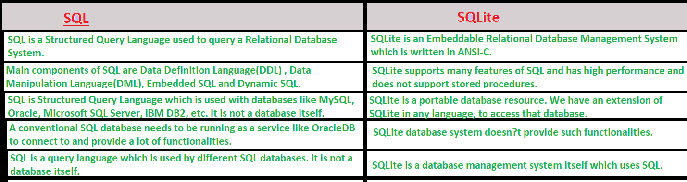

SQLite#
SQLite is an open-source, zero-configuration, self-contained, stand-alone, transaction relational database engine designed to be embedded into an application.
Note
Sqlite was designed by D. Richard Hipp in 2000 for the purpose of no administration required for operating a program. It is very lightweight compared to others like MySql and Oracle, and so it was called SQLite.

Source: https://www.geeksforgeeks.org/introduction-to-sqlite/
Sqlite Basics#
Python has a native library for SQLite3 called sqlite3. Source: https://www.geeksforgeeks.org/sql-using-python/
The relation between SQLite datatypes and Python datatypes:
- None type is converted to NULL
- int type is converted to INTEGER
- float type is converted to REAL
- str type is converted to TEXT
- bytes type is converted to BLOB
Below are various steps using sqlite in python:
Connect#
Step 1. Connecting to SQLite Database
we must import sqlite3
import sqlite3
Step 2. Create a connection using connect() method. Pass the name of the database you want to access: Python will create it or open the existing database.
connection = sqlite3.connect('mydatabase.db')
Step 3. Call a cursor object to send commands to the SQL.
The cursor object is needed to make the connection for executing SQL queries.
It acts as middleware between SQLite database connection and SQL query.
The cursor is a control structure used to traverse and fetch the records of the database.
All the commands will be executed using cursor object only.
cursor = connection.cursor()
Create#
Step 5. Create a table
sql_command = """CREATE TABLE emp (
staff_number INTEGER PRIMARY KEY,
JOB VARCHAR(20),
SAL INTEGER,
ENAME VARCHAR(20),
HIREDATE DATE);"""
Or read from CSV
read_emp = pd.read_csv(r'emp.csv')
read_emp.to_sql('emp', conn, if_exists='append', index = False)
Execute#
Step 6. Execute
cursor.execute(sql_command)
Step 7. Write a query to select all rows from a table emp
cursor.execute("SELECT * FROM emp")
Step 8. Fetch query data into a variable
mydata = cursor.fetchall()
Step 9. Print the results
for i in mydata:
print(i)
Close#
Step 10. Close connection
connection.close()
To learn more about SQLite queries, see https://www.pythoncentral.io/introduction-to-sqlite-in-python/